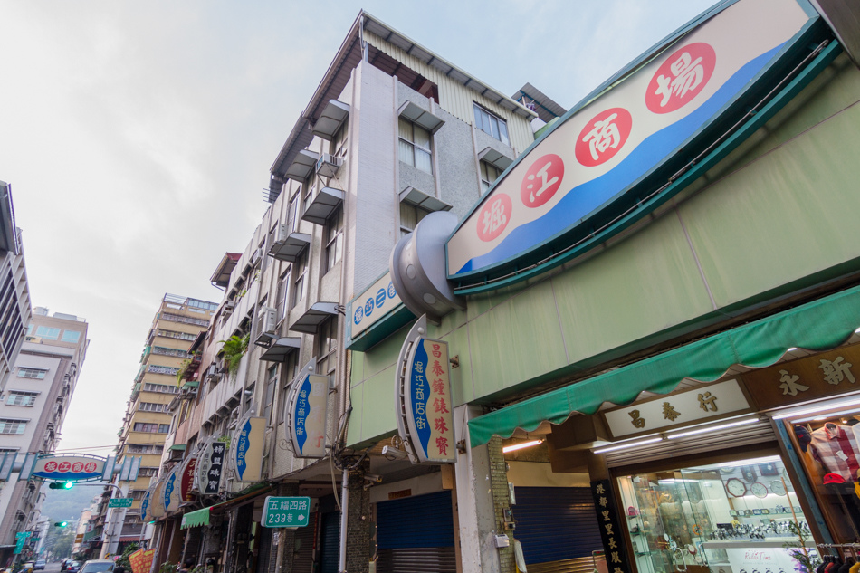

今日的鹽埕區一帶在荷據時期以前，便有船隻至此進行烏魚撈捕作業。明鄭時期此地居民便以曬鹽為生。1701年（清康熙49年），鳳山縣衙認為打狗海濱有漁鹽之利，故招徠20餘人來此開闢鹽田，因鄰近打狗港口，故稱之為「打狗鹽埕」。鹽埕的「埕」與臺語的「庭」同義，皆指「工作場所的廣場」。 之後因鹽場沒落，航運興起，開始出現「拆船」熱潮。最盛時期，在此開業的拆船業者近數十間，甚至出現所謂的「拆船大王」，然而再度沒落，高雄侯家即是以此起家，現東和鋼鐵掌門人侯西泉、侯西峰兄弟的祖父輩和父執輩都做過此行業，替侯家纘了日後創業的大量資源。
明末士大夫沈光文宦遊至臺灣，在〈平台灣序〉中寫道：「鯽魚潭，可饒千金之利，打狗澳能生三倍之財；曝海水以為鹽，爇山材而為炭。」（註）已看出打狗海邊可開發的資源。明鄭時期的參軍陳永華就在此開闢小規模的鹽埕，但並不是有計畫的開墾，所以附近是一片原始的荒涼沼澤，此時只有沙州北端的旗后山下有幾戶人家組成的漁村。
三百多年前的打狗地區，還沒有港口可言，海岸是由沙洲所圍繞形成的潟湖，但是康熙晚期（約 1720 年），清廷轄下的鳳山縣治看中愛河口的濕地適合曬鹽，於是向漳州府南靖縣招募鹽丁趙元、蔡媽為、黃孔等人。繼福建漁民之後，福建的鹽丁也移民來打狗了，雖然只有二十餘人，但足以將愛河口西側的沼澤地開闢為一畝畝鹽田，穩定地產出鹽巴。看似不起眼的鹽巴，竟成為鳳山縣最重要的稅收來源，佔了當時的三到四成。鹽埕埔的鹽，對鳳山縣來說，幾乎就跟黃金沒有兩樣。
1908年高雄港築港完成，以港底泥沙覆蓋在本區，從鹽田澤國搖身成為海埔新生地。來往高雄港的各國貨船、郵輪改停泊至鹽埕埔旁的碼頭，鹽埕埔成為貨物的集散地、人潮的轉運站，因為交通樞紐的地位，很快就發展出商業聚落。這裡可以看到來自世界各地各種新奇古怪的事物，各種異味美食，各色人種。日治時期鹽埕，可是打狗最國際化的地方。當時最著名的商場莫過於 1936 年開始營業的「銀座商場」，空間為長廊式的商店街，販賣百貨及各式衣飾，專門吸引貴婦採購，戰後更名為國際商場。原本鹽埕閃耀的銀色光芒是鹽粒，如今換成一件件珠寶首飾。1928年，高雄市役所遷至本區榮町（即舊高雄市政府，今高雄市立歷史博物館），發展迅速。
二戰末期，鹽埕埔遭受美軍嚴重轟炸，史稱高雄大空襲，但這些傷痕沒有留在鹽埕多久。鹽埕因為美軍而毀滅，卻又因美軍而重生，歷史的戲劇性就在於此。戰後美軍因為韓戰、越戰協防臺灣，大批美軍艦隊以高雄港為補給據點，美軍下船時被規定只能在鹽埕區活動，使得鹽埕彷彿不曾經歷過改朝換代，仍舊是一派歌舞昇平的氣息。美軍為鹽埕帶來另一波繁榮，鹽埕也因此誕生很多美式西餐廳、酒吧等娛樂場所。不過隨著美軍撤出臺灣，高雄新市區的擴張，七○年代人潮開始轉往高雄車站前新興區消費，鹽埕埔的商機逐漸沒落，不復它最富麗堂皇的時代。戰後合併堀江町、入船町、鹽埕町、榮町、北野町，設置高雄市鹽埕區至今，在1960年代時是全市人口最多的行政區，但因商業中心的東移而繁華落盡，人口開始大幅滑落，在2004年已成為高雄市鬧區中人口最少的行政區。
取自 | 維基百科、BIOS Monthly戀戀鹽埕
35,783